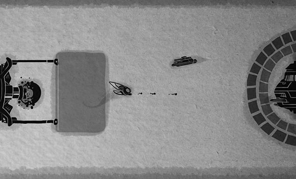

By Lanny McNie, Michael Graves, and Chris Caldwell of gskinner.com
This article recently appeared on the Atari Arcade Developer Center, a collaboration by the teams at gskinner.com , Atari and Internet Explorer.
Most HTML5 games are available in isolation so the hardware and browser can be dedicated to gameplay. But that's not how we envisioned a modern arcade – where users could gather, play the games, challenge their friends to high-score dominance, and earn achievements. We had to rethink how we approached game development with a common set of tools.
With Atari Arcade, that game is changing. This site was designed completely in HTML5 for Internet Explorer 10 and Windows 8 touch-enabled devices - although it works great in all modern browsers. In this guide, we'll quickly get you up and running with your own HTML5 game. The Atari Arcade SDK with CreateJS is one of the first cross-browser HTML5 game development platforms that allow you to take advantage of multi-touch capabilities more easily. The Atari Arcade SDK is just one of many options you should consider. All of the practices we share can be used with other gaming platforms in modern browsers.
Invent a concept from scratch. “Borrow” ideas from other games. At gskinner.com, we were lucky - presented with Atari's catalog, ranging from simple to complex, tasked with a chance to reinvent them. With visions and mechanics already proven, we were able to piggyback on existing gameplay, and introduce new creative. For launch, we targeted eight of the most popular and recognizable titles.
With the computing advancements in the past forty years, we were starting from scratch. We set out to maintain the souls of the originals, which were designed in a more restrictive, low fidelity environment. Here is a snap of the original gameplay in Atari's 1986 top seller, Yars' Revenge©.
Classic.
We started with sketches. Simple, loose, and color-free. They help outline gameplay, general aesthetic, and get our noodles cooking about assets and approaches without focusing on the specific art requirements or details.
Here's a behind the scenes look at some of our original sketches.
Yars' was both tough and fun to reimagine. Despite being a best-selling title in the late eighties, no one on our team had played it. After playing the original, we felt as lost as before.
We found this awesome comic that shows some vision for design
Taking these ideas and discussing our own, we concluded:
Initially we discussed Yar eating the eggs, and sourced a gruesome eating sound. Here is the final, polished visual style.
We considered the story, the scoring mechanic, the levelling system, the animations, the user interactions and the controls for touch for each game. With research, ideation, and aesthetic exploration behind us — we solicit feedback, iterate, and ultimately make decisions.
Let's get into development! Take a short walk through the necessary steps to build on the SDK.
We use a very simple, centralized, and standardized means to define and load game assets: a game manifest. A manifest is a simple JSON-formatted outline that describes a game's key information and its assets. It's a legend, storing:
It houses the pertinent details necessary to preload and start a game. Here is a look at the manifest for Super Breakout©:
{
"splash": "arcadeArt/background.jpg",
"titleArt": "arcadeArt/gameTitle.png",
"id": "breakout",
"name": "Super Breakout",
"gameClass": "Breakout.js",
"modes": [
{"id":"cavity", "label":"Cavity Mode",
"src":"arcadeArt/sp-mode-01.jpg"},
{"id":"progressive", "label":"Progressive Mode",
"src":"arcadeArt/sp-mode-02.jpg"},
{"id":"double", "label":"Double Mode",
"src":"arcadeArt/sp-mode-03.jpg"}
],
"dependencies": [
"scripts/Ball.js",
"scripts/Brick.js",
"scripts/Level.js",
"scripts/Player.js",
"scripts/Paddle.js",
"scripts/LevelManager.js",
"scripts/LevelSelector.js",
"scripts/Breakout.js",
"scripts/ScoreBoard.js"
],
"deployDependencies": [
"scripts/breakout-min.js"
],
"assets": [
{"id":"json","src":"data/data.json"},
{"id":"bricks","src":"data/bricks.json"},
{"id":"lives","src":"data/lives.json"},
"img/lives.png",
{"id":"paddleData","src":"data/paddle.json"},
"img/paddle.png",
{"id:":"brickImage", "src":"img/bricks.png"},
{"id":"background", "src":"img/background.png"},
{"id":"scanlines", "src":"img/ui-scanlines.png"},
{"id":"wall", "src":"sounds/Wall_Hit_02.mp3", "data":2},
{"id":"brick1", "src":"sounds/Brick_Hit_01_Final.mp3"}
// Other audio
]
}
Pictured: work you didn't have to do.
Pro tip: Use JSONLint to validate JSON-formatted content.
This approach decouples the game's assets and the information the game needs about them from the core game logic. Assets get preloaded, modes get populated, Bob's your uncle.
The Atari Arcade game framework preloads and instantiates each game. A manifest is used to configure and populate the site. When a user chooses your game, everything is preloaded and set up. All the assets are provided to the game in a nice, easy-to-use object hash.
// The game manifest includes an image
var assets = [
{id:"projectile", src:"images/projectile.png"}
];
// Inside the game, we just do this:
function initialize(assets, stage) {
var bitmap = new createjs.Bitmap(assets.projectile);
stage.addChild(bitmap);
}
Using the SDK will help you define and implement the methods you'll need to integrate your game into the Atari Arcade.
Within the Atari Arcade site, games are launched inside an iframe. This creates a sandbox for gameplay and provides easy cleanup when it's Game Over. Just make a rad game, provide a manifest, and the framework will do the rest. The SDK has a lot of out-of-the-box functionality to get you up and running easily, instead of having to manage peripheral tasks yourself.
The The Quick Start Guide, included in the SDK, provides a more in-depth review of development including an overview all the functionality, utilities, and key framework classes.
The well maintained API Documentation included in SDK, is exported directly from in-line code comments.
Here is a whirlwind review of some of the key concepts:
We know the game is preloaded, but the user hasn't started it. Maybe they're reviewing the controls, or gazing into the shiny logo. This gives you a chance to initialize your game.
// Simply define the function, and it is called by the framework.
function initialize(stage, assets, gameInfo) {
this.stage = stage;
// TODO: Add children to stage
this.assets = assets;
// TODO: Use to get references to preloaded assets
this.gameInfo = gameInfo;
// Use to determine info such as multiplayer, number of players
// touch enabled, etc.
}
Once they click "Start" though, it's game on.
// Simply define this function, and the framework calls it
// when a game is ready to be started
function startGame() {
// Start!
this.createBall();
this.startMusic();
}
A ticker provides a heartbeat to the game, powered by EaselJS's Ticker. This is where the game updates (and animates) sprites, runs collisions, calculate scores, handles input - whatever floats your boat. The tick is automatically managed for you: stopped and started when necessary, and even throttled down in high-stress situations.
// The game framework calls tick at regular intervals while the game is running.
function tick(tickFactor) {
// Move ball
this.ball.x += (this.ball.vx * tickFactor);
this.ball.y += (this.ball.vy * tickFactor);
// Note: the tickFactor tells you the speed the game is running relative to the
// defined framerate so you can ensure the game runs at a steady speed.
}
One of the biggest disparities across many browsers and devices in HTML5/JavaScript development is performance.
Depending on your hardware, browser, or even the time of day, you may have hardware accelerated performance with Canvas. Sometimes a browser just needs a restart, or a user needs to upgrade their video card. Maybe new drivers are available. Maybe it's a full moon.
To combat this situation, the Atari Arcade SDK allows you to prioritize features and effects in high or low quality situations. Simply check which quality mode the game is running in, or subscribe to a low quality event, to disable or remove features that don't perform well under stress. Scale back or remove particle effects, large bitmap animations, or even swap out sprites for lower fidelity ones.
// Create a performance monitor
var minFPS = 20;
var threshold = 20; // The number of ticks before toggling low quality
var perf = new GameLibs.PerformanceMonitor(toggleLowQuality, minFPS, threshold);
// Once low quality is toggled, turn off the heavy firework effect.
function toggleLowQuality(lowQuality) {
if (lowQuality) {
fireworksEffect.enabled = false;
}
}
// During a tick, only emit particles if in high quality mode.
function tick() {
if (perf.lowQualityMode == false) {
particleEmitter.emit(ball.position, 100, particleProps, defaultParticle);
}
}
In Combat, we turn off projectile trails, tank treads, and other explosion effects when the CPU starts complaining.
All games track score differently, but most have similar requirements: numeric points, life count, and levels. A ScoreManager class provides tweened, formatted score - as well as the raw unformatted score for submission. Just point it at your EaselJS Text instance, and add numbers with reckless abandon!
There comes a time when you are finished battling the Quotile scum, and need to let the Yar superiors know how the battle turned out. Did you win? Should we allow you to continue?
Some easy callbacks are available to communicate this (and other significant game scenarios) back to the framework.
function onKillPlayer() {
// Who are we kidding? You lost. Yars is hard!
this.lives--;
if (this.lives == 0) {
// Normally we might do something fancy first.
// Like fade out the player, or show a death animation
this.onGameOver();
}
}
That's it! The framework does the rest - even high score submission and display is handled for you.
The SDK provides some handy utilities and skinnable components to define and capture user input from the keyboard or mouse. It even translates mouse presses to directional and drag behaviours.
Touch is emerging on the web, and the Atari Arcade games have been designed with touch in mind for Internet Explorer 10. You can use EaselJS and the Atari Arcade SDK to create simple-to-use multi-touch capabilities. It offers a single, cross-browser, and developer-transparent implementation.
// Initialization is a great time to set up touch controls
function initialize(stage, assets, gameInfo) {
// This setting comes from the gameInfo
if (gameInfo.touchEnabled) {
// Create a joystick. There are lots of awesome
// configurations, but this is all you need to get
// started. Check out the docs for options!
var joystick = new GameLibs.Joystick(stage);
joystick.setPosition(25, 25);
stage.addChild(joystick);
}
}
A lot of the code and effects used in the Atari-developed games have been wrapped up, documented, and provided as part of the SDK. Have at ‘er:
You might notice multiplayer classes included in the SDK. Our initial launch includes four multiplayer games that use them, and they are interweaved into the site framework. Third-party developed games currently do not (yet) support multiplayer modes, but we're in the process of polishing our approach to facilitate immersive, third-party multiplayer experiences in the arcade. Stay tuned!
Once the manifest is populated and assets are loaded, its time to focus on the flair. Garnish gameplay with sound, particles, killer illustration, and animation. Keep it subtle. Go over the top. Turn your application into a world.
It can be the little things that make an interaction interesting.
In Yars' Revenge©, The tiny bob and leg animations convince you that he's flying. The spawn of the Quotile, howling and screeching as they hatch: they're menacing! The background sounds and splashes help place you in the environment. It's a private battle, off-site: a lone Yar battling to save his species! Or do they oppress the peaceful Quotile villagers. You decide!
The framework helps out with this too.
Add movements and animation with code. Lots of the included libraries can help: Math utilities, the ScoreManager, TouchBar, and more.
Include easy animation tricks with TweenJS. Add shakes and kicks and pulses. Transition views, dialogs, or new levels in and out.
Sound effects, background ambience, and a catchy track transforms the experience immediately. SoundJS makes one of the messiest cross-browser implementations a snap.
function fireWeapon() {
// Play a sound once
createjs.SoundJS.playSound(this.assets.fireSound);
// Play a sound, and get a reference to it
var instance = createjs.SoundJS.playSound(
this.assets.fireSound,
createjs.SoundJS.INTERRUPT_ANY,
offsetMilliseconds, delayMilliseconds,
loopCount, volume, pan);
// Call methods, or listen for callbacks
instance.onComplete = handleFireComplete;
instance.pause();
}
Particle effects are an industry standard for flair. ParticleEmitter adds smoldering effects, sparks, water splashes and smoke trails. It's highly configurable, and comes with a sweet test harness. It uses an efficient approach by reusing instances combined with bitmap caching.
Users may be touching their browsers with their hands. EaselJS's multitouch-enabled stage responds back. Skin the built-in controls, or roll out custom touch UI for their fingers.
Cheat codes are a staple of the game industry, so add your own hacks. The "konami" code is even included the SDK, wire up a callback on the GamePad class, and anyone nostalgic enough to try them can be rewarded with magic. We included support in a few of our games too - see if you can find which ones!
Optimization of HTML5 games is an article on it's own, but here's a few tidbits to set you on the right path:
Canvas does not perform smart area redraw (unlike Flash), and will refresh the entire canvas each tick. Hardware acceleration can assist with this, but generally speaking, try and keep textures smaller. Move static backgrounds out of the canvas. A handy GameUI framework class in the SDK helps with this, and there are other useful classes to do effects outside of the Canvas (such as Parallax).
// An asset in the game manifest, which preloads the background
var manifest = [
{id: "background", src:"images/background.png"}
];
// Backgrounds can be changed in the initialize
// Or alternately somewhere in the game, like a level change.
function initialize(stage, assets, gameInfo) {
// Note that the background is provided as part of the assets.
GameLibs.GameUI.changeBackground(assets.background);
}
Modern browsers are able to accelerate content, but there are still ways to get the best bang for your buck.
Reuse image instances as often as possible. Cache graphic instances that only need to be drawn once. Use updateCache() in EaselJS to continue adding pixels to cached imagery, such as the tank treads in Combat.
// The Arena.js contains the stamp method
function stamp(stamp) {
// Clear out any old children. They aren't drawn so they
// only get removed when we want to stamp something new.
this.groundLayer.removeAllChildren();
// Stamp the new sprite on top of existing cache
this.groundLayer.addChild(stamp);
// Using source-over, it just applies on top
this.groundLayer.updateCache("source-over");
}
Create spritesheets and textures that have dimensions that are a power of two. Zoë now provides this option in the update to version 0.3.0.
Using spritesheets in HTML5 allows hardware acceleration to use the same image for all the frames in an animation. There is a single up-front load, the image is cached, and then simply transformed every frame. This also prevents the browser from re-uploading textures to the GPU when an image isn't being used in a frame.
We use Flash to author some of our animations, but all of the assets are run through Flash for processing with Zoë. We use JSFL to bundle spritesheets together for use with CreateJS.
Another approach for vector art is to export assets directly from Flash using the "Adobe Toolkit for
CreateJS". It can export vector data to be used by the EaselJS SpriteSheetBuilder class to generate spritesheets on the fly
at runtime.
Download the Toolkit now.
Even though canvas rendering takes up a large chunk of our pipeline, optimizing code is an exercise we encourage.
Some browsers do better with different technologies. Always plan your game design with a hardware-accelerated browser, but be prepared to gracefully degrade.
There's a ton you can do here.
Mobile and desktop. Different browsers, different behaviors. The same browser in a different OS, or different CPU, or even a different video card, can have vastly different results. Check in your target browsers, and check often. When testing multiple versions of IE, try using the F12 developer tools.
Do a sanity check when running into bugs by clearing your cache, refreshing your page, or by testing older or newer versions of the same browser. For example, some browsers update often, or transparently, potentially introducing incompatibilities with your code. Sometimes a good ol' browser restart will help too - especially if something like CSS3D or WebAudio fails completely.
To simplify and equalize cross-browser console reporting, we've included some utilities that save you headaches and time when logging info to the console.
The nature of HTML5 can make it tricky to test locally. Errors will erupt and there's browser warnings galore. Cross reference online behavior to see what's isolated to local testing versus legitimate defects in code. For example, ignore these locally generated cross-origin errors when loading content via XHR.
Some features in HTML5 literally require your game be run off a server. To test locally, use tools like MAMP and
XAMPP to run a web server locally.
Mac: http://www.mamp.info/
Windows and Linux:http://www.apachefriends.org/en/xampp.html
Fire them up, point their preferences at your game directory, navigate to your launch page on your local IP, and say good-bye to cross-origin errors! This also makes device testing over a network a breeze. In a team environment like gskinner.com it wasn't rare to have others testing bugs, regressing fixes, and checking out gameplay right off of another developer's machine that was running a local server.
One helpful note: to test local content in Internet Explorer 10, add your IP as a trusted site in the Internet Explorer options on the Windows 8 desktop.
Online is the only real test. Push milestone progress up to a server and do a thorough sweep across all features and fixes in all browsers, operating systems and devices. Always clear your cache between tests (unless testing cached-specific features) and optionally quit your browsers.
FTP is slow. Check out a GIT deployment repository on your server instead using SSH, and anyone working on the project can just commit changes. We set up a script to automatically pull down the latest updates on the server, and tied it to a git commit hook for completely automated deployment! Its a few steps worthy of its own article, but it saved us an amazing amount of time.
The testing harness in the SDK provides a great way to do game testing, and includes some additional options that can lighten the load, such as:
Strive to have the most minimal, turn-key deploy process as possible.
.. But most of that is covered for you with the SDK. We are still ironing out the 3rd-party game submission process - but are aiming for it to be as automated and straightforward as possible.
Once you're done, visit the Game Submission section in the developer center. We will be updating this with an official submission process in the coming weeks.
Thanks for making it this far! Stop reading, start building! Pick a cool title, and go have some fun. Let us know what you make, and what you'd like to see in the Atari Arcade or SDK.
Here's some additional resources and references for game development in HTML5.

Lanny McNie, Michael Graves, and Chris Caldwell are the senior staff of gskinner.com, an agency focused on building bleeding edge interactive and creative, and bringing value to platform owners, developers, and end users alike. We produce success stories that showcase and enhance technology platforms. We recently worked with Atari to bring re-imagine the Atari Arcade using webstandards like HTML5, CSS3, and websockets.